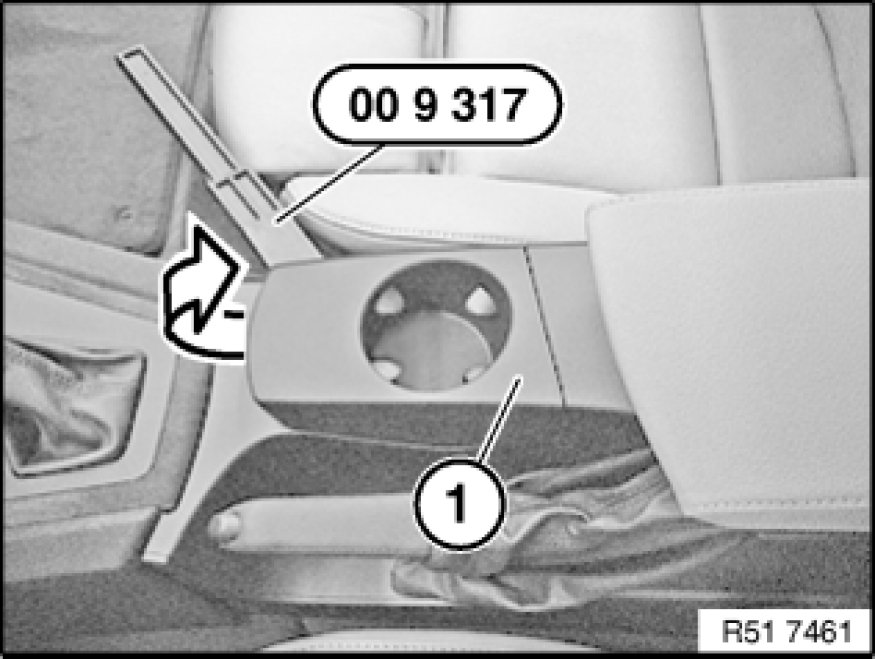
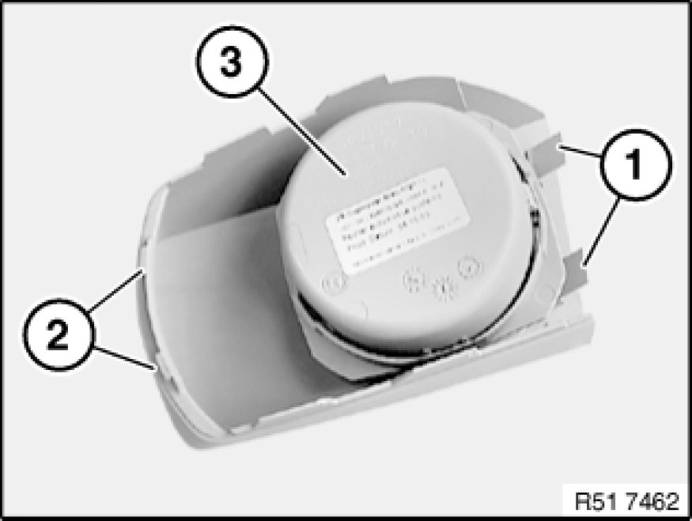

51 16 202 Removing and Installing/Replacing Front Cup Holder
51 16 202 - Removing and installing/replacing front cup holder

Special tools required:
- 00 9 317 00 9 317 Trim Panel Wedge

Lever out cup holder (1) with special tool 00 9 317 00 9 317 Trim Panel Wedge in direction of arrow and remove.

Installation:
Guides (1) and catches (2) must not be damaged.